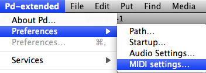
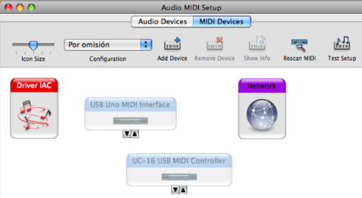
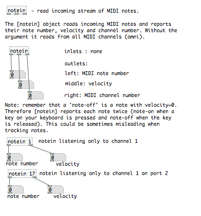
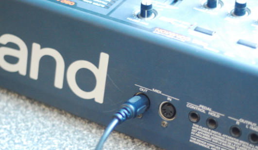
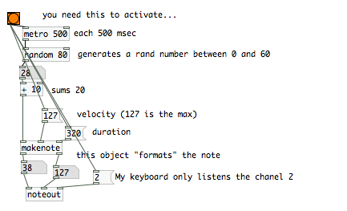
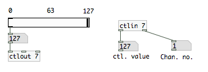

Midi
This chapter will show you how to use midi to receive notes from midi keyboards or control messages from standard midi devices and also how to send midi to other programs or to midi hardware.
Setup
Before start working with midi, you should select your device in the dialog: Preferences/midi settings

Then select which device you want to use for input/output midi, by default no device is selected. Before starting pd, you should plug your midi hardware, otherwise it will not show up in this dialog. In this case, we have selected our hardware "USB MIDI 1x1" (a midi interface) and the rest of "devices" called IAC are internal midi buses in osX.

Note to OSX Users : In some cases with OSX you will need to check and activate the device in this "Audio midi setup" app. This can be found inside the utilities folder as shown below.

Channels and Ports
Once we have chosen the midi device, we can check if it´s working. To do this you need to know a little about the concept of midi channels.
Midi channels are used to identify devices so you can receive and send notes with specific hardware (or software!). Usually midi devices use one 'channel' for sending and recieving this information. There are usually 16 midi channels in total.
Multiple Devices
Pd can use also multiple midi devices, so in the midi settings window (seen before), you can add more devices by clicking on the button "use multiple devices" and adding it in any free "port" (each one with the respective 16 channels...)
You can also in pd "filter" the midi messages by specifying which channel/port we want to "hear" with an "argument" in the midi object.
objects used to receive and send notes are [notein] and [noteout] respectively.
Here is an "extract" of the help for [notein], the object we will use when we want to connect a midi keyboard (or any other midi device that generates notes!) to pd in order to play sounds or doing anything.

3-Midi hardware:
Since midi was developed in the 1980´s you can find many devices compatibles with it that you can use with pd. Typically you can find synthesizers, midi interfaces, midi controllers, midi hubs and of course, the symbolic midi cable. the cable it´s a DIN 5 pin cable with two male conectors. the midi conector in the devices it´s always female, it doesn´t mater if it´s input or output so you have to take care when connecting the devices because it´s possible and easy to make a bad connection and then, your system will not work..
1- To connect any midi keyboard to pd, you have to connect the "midi out" of the keyboard with the "midi in" of your midi interface.

A midi interface it´s a device that adds standard midi hardware ports to the computer, tipically via USB connection.

Note: There are modern keyboards that have an USB/ midi interface integrated to transmit midi directly to the computer via USB cable. in this cases, you will not need the classic midi cable.

This is the setup Midi keyboard-->midi interface-->computer. In the midi settings configuration, you have to select your midi interface as midi input. when you create an [notein] object in pd and you play notes in the keyboard, you will see which note/s you are playing, the velocity and the channel. Here, we can see that this keyboard is transmitting only in the channel 2. Usually you can change the transmitting channel of the keyboards by looking in his own configuration.
4- Making notes in pd, Sending / reciving notes.
A standard midi note it´s a message formed by a number that determines the pitch of the note, the velocity (volume) and the note off message that is the same note but with the velocity=0
to send notes with pd to external hardware/software, we use the object [noteout],
This example patch, generates random numbers, then "format" this number into a midi note with velocity and note off message and then send it "out" using the object noteout.
When you have selected the same internal midi bus in midi devices for in/out, ex: device in = IAC1 / device out= IAC2, then you can create in pd a [notein] object to send midi notes to other pd patches.


This is the setup Pd-->midi interface-->hardware synthesizer.
In this case, you need to select the midi interface as midi output device in the pd midi settings.
In this case, was needed also to add (and bang) the message "2" into the right inlet of the object [noteout] because this roland synthesizer only listens channel 2. We know this because before we connected the keyboard as input in Pd and then, we could see that this machine works only on channel 2.
5- Midi controllers
When we want to control our pd patches with a midi controller we use the object [ctlin], this has 3 outlets, the left one outputs the controller value (0-127), the middle one outputs the controller number (cc) and the rightmost one outputs the channel and Port (channel "17" in Pd means midi channel 1 in port 2). In this picture we can see the output of [ctlin] object when I move one encoder in the midi controller "BCF2000" connected to the port 2.

When you create the ctlin object without arguments, it´s listening to all cc´s and to all channels. This is useful as an analysis tool to know which cc and channel sends each fader/ knob of your controller.
In some midi controllers, some faders send the same cc number than others but in other midi channel.
Tipically, we add the arguments cc (control change) and channel/port to the ctlin object to make it "hear" only the cc and channel specified because usually midi controllers have many knobs, faders, etc.. so each fader/knob it´s going to make only it´s specific/s function/s that you choose..
When we analyze each fader/potentiometer/button/etc, we can create a specific ctlin message to listen only one thing, this is the way to do an abstraction to have all the cc´s of our midi controller assigned to an individual output.
This is how it looks like my object "pd uc16", ready to receive the cc´s from my cheap midi controller evolution uc-16. it also reports in a "bang" which output of the abstraction correesponds to each potentiometer.

This is how a "tuned" uc-16 looks..

6- Sending midi to other softwares, sending CC (control change).
we can use the same random notes patch we´ve seen before also to send notes to any other software running in the same computer.
Here, the trick is to have the same midi bus selected in Pd midi out device and in the midi in of the software you want to use..
Control change messages:
These are special messages used to change parameters in the midi devices such as "cutoff frequency", "resonance"... etc.. There are about 127 different cc´s possibles in each midi channel.
In this patch we send the values of the slider to the cc number 7 in the channel 1.

7- Another midi objects:
There are more midi objects in pd and almost all of them are documented in the pd help.
[pgmin] / [pgmout] This objects receive and send "program changes". Program changes were used to change "programs" or sounds in synthesizers, patterns in rythmboxes, etc..
[bendin] / [bendout] This objects receive and send "pitchbend" changes. Argument is midi channel.
All the objects we have seen till now are the "basic" midi objects included also in pd vanilla but there are more objects like [midiin][sysexin] that runs only in linux or [touchin] and[polytouchin] that are not docummented yet..
In pd extended there are more "advanced" midi objects inside libraries such as maxlib or cyclone. In the chapter "list of objects" you have a short explanation about this new objects.